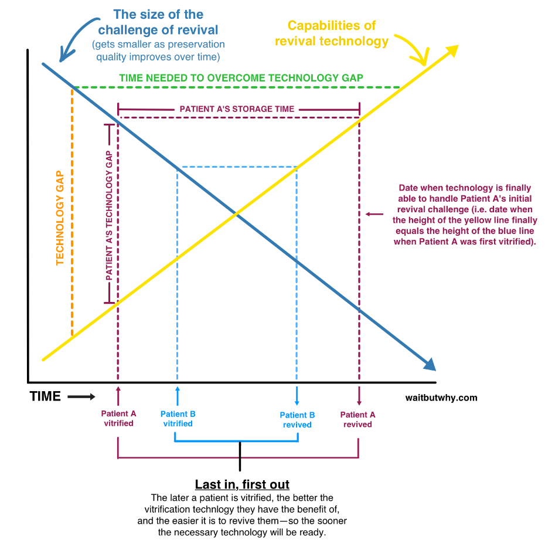

距离发布上一篇博文已经快过了将将一个月，这真的是一个堕落的六月，原本计划的机器学习和Our Country In Data项目都搁置了，竟然一门心思在炉石传说冲天梯上，原本以为这个月初就可以快速的冲进传说，结果到今日也还没有成功，到了二级之后一直连输到七级，心态也随之崩溃，好吧，之后会写篇专门的文章来总结一些炉石的体会，这里就先言归正传，从今天开始将继续振作，给自己的业余学习加入一项新的内容，就是翻译Wait But Why的精品文章，今天这个算是第一篇，也是wbw最新的一篇，详细介绍人体冷冻法的可行性，文章实在是有点长，所以分上下两集来写吧。
你正在飞往某著名海岛度假的航班上，喝着果汁儿听着歌，心情也是特别的萌萌哒，突然一声巨响，紧跟着是剧烈的震动，一分钟后广播里传来了机长的声音：
我们飞机的引擎刚刚发生了爆炸，飞机将在15分钟内坠毁，届时所有乘客将没有生还可能。还有一种方法可以逃离飞机，就是选择使用降落伞，但是我要提醒和警告你们，降落伞并没有经过严格的测试，只是作为万不得已的备用工具一直存放着，不能确保一定可以使用，并且我们无法预测降落下方的地形。如果选择使用降落伞逃生的旅客请站在过道上，依次排好队伍，我们的机组人员会给你们发放降落伞，并告诉你们基本的使用方法，然后会带你们到紧急出口，你们将从那里跳伞。如果不选择跳伞的旅客，请坐在原位，一切将发生的很快，你将不会感受到痛苦。
好吧，问题来了，面对如此坑爹的选择，你会怎么选？
1930年，当Robert Ettinger还是个孩子时，他便已经阅读了很多的科幻小说，他认为按照当时的科技发展速度，在他的有生之年，科学家就能发现某种长生不死的方法，他将可以看到一个病痛已然是过去时而人们可以自主选择是否死亡的世界。可是在那之后的三十年，病痛和死亡仍然是人类所无法抗拒和避免的，此时的Ettinger已经是个物理学的教授，他意识到科学发展的速度貌似已经来不及让他享受到长生不死的福利了，于是他开始思考如何可以有别的方法来达到永生的目的。相比死后被埋葬或是火化，是否有可能把自己以某种方式冷藏起来，有朝一日科技可以战胜死亡，那时的科学家或许可以有某种方法或工具让他复苏。
1962年，Robert Ettinger将他关于人体冷冻的思想写进了一本名为《The Prospects of Immortality》（《不朽的前景》）的书中，所谓的人体冷冻法自此诞生，而他也被誉为人体冷冻学之父。此后第一个尝试人体冷冻的人是James Bedford，他是一位心理学教授，因为癌症于1967年去世，享年73岁。他被冷冻在一桶液氮内被存放在亚利桑那州。在他之后又有一些人被冷冻，至今为止已经有超过三百人被冷冻在液氮里。
一年前，我对人体冷冻几乎一无所知，我对人体冷冻的印象是诸如下面这样的描述：
人体冷冻学，或体温生物学，是将那些不愿意接受自己死亡的富人冷冻起来，希望未来的人可以使他们复活的方法，这些人体冷冻狂热分子构成的团体类似于一种科学邪教。
之后我就开始学习一些人体冷冻学方面的知识。这期间收到很多的电子邮件指出我的上述认识是错误的，他们认为人体冷冻学是一个潜在的未来科学，其中有过不止五个人在和我面对面的交流时提到这一点。在随后阅读了一些人体冷冻学方面的资料后，我很快便发现我的许多错误。那么首先让我们来准确的认识一下人体冷冻学，让我们从如何纠正上面这部分定义开始。
上面这个定义好像就是在说“翼状飞行，或气象学，是一种利用飞行衣在空中飞行的运动。”气象学是一种研究大气中发生的各种现象的学说，包括对风的作用的研究，而翼状飞行则是利用了风–那么如果我们把翼状飞行和气象学认为是一回事的话会显得我们是多么的2B。类似的低温生物学只是物理学的一个分支，其研究的是生物在低温环境下的表现，而人体冷冻学则只是一种使用低温将人类保存下来的一种实践，他们不能混为一谈。
弄清了大致的理论界线之后，下面我们要开始一点一点的纠正之前的定义，我们将从人体冷冻是如何一步一步实现的开始说起。
如果你决定了要成为一个冷冻人，那么要经过以下几个步骤：
第一步：选择一个公司。
目前有四家比较大的公司提供人体冷冻服务–亚利桑那州的Alcor，密歇根州的Cryonics Institute(CI)，加利福尼亚州的American Cryonics Society(ACS)以及在俄罗斯的KrioRus，其中KrioRus是一家新近公司且发展迅速，不过这其中最大的两家是Alcor和CI，ACS没有自己的冷冻人存储设施，如果你选择了ACS，那么他们将会把你存放在CI。
经过我的进一步考察发现，Alcor相对来说更正统，而CI相对来说更经济，CI是由之前提到的人体冷冻学之父Robert Ettinger发起的。这两家都是非盈利性组织，他们目前都已经冷冻了150个人左右，Alcor拥有超过1000名会员(这些会员去世后将会被冷冻)，CI的会员人数差不多是Alcor的一半。
第二步：成为你所选择公司的会员。
要成为一个冷冻人，你需要填写一此表格、签署一些材料并对这些材料进行公正，然后需要支付三种费用：作为会员的年费，在你去世后将遗体运输至存储设施的运费以及之后的存储、保养及唤醒费用。
Alcor的年费大概是700美金，而他的运输费和之后的一系列费用是捆绑在一起的，差不多是20万美金，Alcor提供另外一种只冷冻大脑的服务，费用会相对低一些，只需要8万美金。
CI的年费是120美金，或者可以选择1250美金成为终生会员，之后需要一次性支付的费用大概在3.5万美金，对于终生会员优惠价是2.8万美金。之所以看上去CI比Alcor便宜这么多这里主要有以下原因：
一个是CI的一次性报价3.5万美金并不包括运费，如果你的居住地离他不远，那么可以省下不少钱，否则需要另外和第三方运输公司签署一个9.5万美金的运输合同(终生会员价格是8.8万美金)。
另外，Alcor将使用你所花费资金中的一大半作为保证金，用来确保已经冷冻的客户不会因为公司财务等原因而被遗弃，因为在上世纪70年代曾经存在更多的人体冷冻公司，后来有一些破产倒闭了，导致已经在这些公司冷冻的客户无奈被放弃，这是大家都不希望看到的。
第三步：从你所选择的人体冷冻公司购买一份人身保险。
感觉有点怪怪的，但是这是很有意义的。因为相对来说Alcor和CI都不是什么大公司，预算十分的有限，他们都无法保证每一个客户最后都能负担的起所有的费用。而对于客户来说，除非真的十分的富有，要不然人体冷冻是一笔巨大的开销，那么一份人身保险可以强制客户通过一生中日常的积累来支付最终的费用。即便是对于年轻人来说，这份人身保险听上去也是比较便宜的。如果选择的是CI，那么基本上一年只需要支付300美金，这其中已经包括了120美金的会员年费；就算选择的是较贵的Alcor，算下来每个月也只要100美金左右。
这样的价格对于很多并不是真的特别富裕的人来说也是可以承受的，特别是一些还没有什么财富积累的年轻人，其本上看上去是省下一些买烟的钱就可以给自己买一个永久的保险。
第四步：带上一个标志性手镯好好的活着。
所有的加入人体冷冻公司的会员都会得到一个刻有会员基本资料信息的手镯，公司会鼓励你一直带着它，这样即使是发生意外的身故，找到你的人会根据手镯上的信息联系公司。
第五步：死亡。
好吧，接下来我们要谈的是死亡，死亡这个话题就会有一点的微妙。人们常规的理解，生和死是存在着明显的界线的，一般都认为一个人要么是活着的要么是死了的。事实上真的是这样的么？这里让我们先花点时间研究一下生和死的问题。
让我们先来看一看在什么情况下一个人会被认为是快死了或者说是将死的。客观上来说，这要取决于这个被认为的将死之人身处何时何地。比如几百年前一个得了肺炎的三岁小孩很有可能就会被认为没救了，而在现在看来是完全可以治愈的。而就算是在相同时间，比如医学相对发达的今天，生活在偏远山区和繁华都市的人，要是患了重病的话，后者的生还或治愈可能会远高于前者。因此，判断一个人是否将死需要综合考虑很多因素。
同样的，对于死亡的认定也并没有严格的标准，不同的时期往往采用基于当时科技能力的判断。正如Alcor的CEO Max所说的，五十年前，要是当你走在街上，一个人突然倒在你面前并且停止了呼吸，那么你和路认可能都会判断这个人突然死了，然后就把他当死人给处理掉。而今天碰到类似的情况我们不可能这么轻易下结论，而是会做一些心肺复苏这样的急救措施，很有可能就不会死。也就是说，五十年前我们认为的死人现在看来并不是。
目前，医学上对死亡的判断一般是指当事人的心跳停止了4~6分钟，因为这是大脑缺氧所能维持的一个最长的时间，之后大脑就会开始死亡。Alcor在其官网上对于脑死亡原因的解释更为具体一些：大脑并不是在缺氧后的几分钟突然被摧毁的，而是伴随着温暖的血液循环的消失所引发的一连串反应，在几个小时内渐渐的坏死掉的。通过人工的恢复血液循环，通过高压重新打通阻塞的血管进行供氧的同时避免含氧量超标，并通过药物来防止细胞坏死，就可以阻止大脑的坏死。目前的技术在实验室里已经可以使超过十分钟没有鲜活心脏供血的大脑存活下来了。未来的科技，诸如纳米技术，分子层面的修复技术的发展，或许是可以使得更长时间没有心脏供血的大脑存活，从而改变目前对死亡判断的标准。
也就是说，我们所认为的死亡，其实都只是在当前条件下做出的判断，五十年前，心跳停止跳动的人其实并没有死，只是在当时的医疗条件下无法挽救他，正如现在心跳停止了4~6分钟被认为是死亡是因为目前的医疗技术几乎无法帮他继续活下去。
人体冷冻学的观点认为死亡并不是一个单一的事件而是一个过程，一个从心脏停止跳动开始到最后称为信息死亡的过程，这里所谓信息死亡指的是大脑已经被毁坏的十分的彻底以至于现在甚至将来也不可能恢复或者获取大脑里原本所存在的信息。
举一个简单的例子来帮助理解死亡的认定标准，假如有一个病危的人在被救护车救到A医院的时候心脏已经停止跳动15分钟了，A医院的医生只能无奈的摇摇头，宣布病人死亡。如果这个时候，知道对面B医院有一项新技术，可以使一个心脏停止跳动60分钟的人恢复心跳同时又能避免大脑的永久损伤，那么病人家属会怎么选？不用说，肯定马上转院咯。B医院要是救活了这个病人，那么理论上说他在A医院就没有死，只是以A医院的能力认为他已经死了。
人体冷冻学者的观点就是认为我们目前的水平所认定的死亡并不是真的彻底的死亡，所以存在这样一个B医院可以挽救，于上面例子里不同的是，这家B医院不是开在马路对面而是未来。
这也就是为什么人体冷冻学者们认为他们冷冻的不是死人的尸体而是需要被转院到未来进行治疗的病人，他们认为有很大的可能性我们今天所认为的尸体在将来某一天只是一种病人，所以他们认为自己所从事的这项工作是一种延伸医疗急诊服务。
但是以目前的科技水平并无法使冷冻人复活，所以从法律上来说冷冻人不能看作是一种医疗手段，而只是一种特殊的收殓方式，因为我们换个角度来看，如果把还未宣布正式死亡的人冷冻起来在法律上看来是一种谋杀行为，即使病人已经确定无药可救了，在目前的法规下他自己也无法选择在活着的时候被冷冻。就这一点上说，算是给了人体冷冻行为营造了一定的约束，也是为什么需要更准确的标准来定义死亡。
目前的法律并不认为死亡是一个过程。在过去很长一段时间，在法理上把呼吸和心跳停止作为判断死亡的标志，随着现代医疗的发展，呼吸和心跳短暂停止的病人有可能恢复，所以原本的法律也作出了相应的调整，将”大脑功能的不可逆的彻底停止”作为法理上死亡的判断标准，也就是我们常说的脑死亡，之前所定义的呼吸和心跳停止我们称之为临床死亡。理论上说，医务工作者有义务尽最大的努力来抢救任何一个病人，而病人也有权利选择不接受治疗甚至在某些情况下选择安乐死。对于一些自己放弃治疗的临床死亡的病人医生或护士也可以宣布其法律上死亡，即便是可以通过一些外部设备继续让他的大脑活着。
所以对于死亡的标准对于人体冷冻过程来说是一个关键因素。因为只有病人在法律上认为死亡之后，人体冷冻公司的工作人员才可以开始他们的工作，对人体进行冷冻，而如果可以得到那些危重病人自愿放弃治疗的承诺，那么工作人员可以在病人心跳已经停止而大脑还没有什么损伤的时候就介入，这样会对将来成功的唤醒有更大的帮助。
所以下面这幅图清楚的反应了人体冷冻的介入时机：
那么现在让我们更准确的来定义一下第五步：法律上的死亡。
这是整个流程中的关键一步，所以这一步一定要尽可能的做的完美。
比较好的死法：指的是死于可以预知的因素，比如癌症等。这种情况你甚至可以在生前自己就来到Alcor或CI，然后在他么下属的或相关的合作医疗机构度过人生的最后阶段。这一点也相当重要，因为作为需要被冷冻的一员，你所要接受的临终待遇相比普通人可能要更加的细致，在这些与人体冷冻机构合作的医疗单位将势必会得到更对口的治疗措施，而这样的措施在其他医院是不会有的，甚至有的医院可能还会拒绝接收你。当你已经在这样的专门医疗机构里之后，你所要做的就是和人体冷冻公司的工作人员一起耐心的等待法律死亡那一刻的来临，之后他们就可以开展后续的冷冻工作了。
比较差的死法：指的是死于一些意外因素，比如心脏病突发。相对较好的情况是发病的时候正好周围有人在场而且可以帮忙联系上人体冷冻公司，然后可以将你迅速的送往医院，工作人员可以尽快的开始冷冻；相对较坏的情况在你死后数小时才被人发现，这种情况下，人体冷冻公司能做的就只是尽力而为了，因为大脑此时已经处于比较坏的状态了，不过由于无法知道将来的科技能发达到什么程度，或许还是有恢复的可能，所以只要不是信息死亡，还是可以进入冷冻流程保存起来的。
相对最差的死法：指的是死于严重的事故，大脑受到了严重的物理损害，比如说车祸。这种情况下，人体冷冻公司或许也无能为力了，比如对于那些死于911的Alcor会员。还有一种特殊情况也算是最差的死法，就是如果涉及某些案子，警方需要解剖尸体。难怪有一个签署了人体冷冻合同的会员被问及成为会员以后对生活有什么改变的时候，她说：最大的改变是我生活的更加小心了，开车更慢也更当心了，总是会注意自己身边的安全隐患。因为她不想死于最差的方式。
第六步：以最快的速度冷冻并运输至人体冷冻设施。
当你被认定为法律上的死亡后，理想状态下你所选择的冷冻公司的团队会立马接手后续的处理。 一般来说有他们首先要做的有两个事情，先将你放入一个装满冰水有浴缸里来给你降温的同时也是减缓你的新陈代谢过程，这样做可以延长身体机能的有效时间，然后就是让你的心肺功能得到一定的恢复以保持身体在一个稳定的条件下，他们把这个过程叫作心肺功能支持，而不是原本抢救病人时所有的类似震颤机这种心肺功能复苏。
接着会给你注射一系列的药物，以防止血液凝结和肉体腐烂。当以上一切都稳稳弄妥之后，接着是更多的外部介入，会在你大腿根部的大血管接入类似下面这样的设备：
这是一个人工的心肺机，可以用来保持一定的血液循环和氧气供给，从而替代一开始的比较初级的心肺支持术。除了恢复血液循环以外，这个设备还会吸收体内的热量，将体温控制在冰点以上一点点，并在血液中加入一些药物以使得生命可以在如此低的温度得到维持，这一招也正是目前做器官移植手术时，被移植的器官需要做长距离运输所采用的保鲜方式。
如果距离人体冷冻公司的设施太远，他们会将你打包之后通过飞机运输过去，希望这不是你人生的最后一次飞行哈。
第七步：玻璃化。
一般人都认识人体冷冻嘛，就是把人冷冻起来，实际上并不是，而是一种叫作玻璃化的方法。
玻璃是一种很神奇的材料。它并不是一个严格意义上的团体，因为在将玻璃从液态降温至凝固成固态的时候，它内部并不会结晶成一个有序的结构，而它明显也不是液体，因为它并不会流动，所以我们说它是一种非结晶的固体。这里所有表达的关键是，玻璃在从液态变化成固态时，并没有结晶，而是它当中的分子运动变得很慢很慢，直到几乎不动。
如果只是将人体冷冻起来，那么所有的体内的液体都会在一定温度达到冰点从而凝结起来变成固体。这不是一个好的方法，首先一点就是水在凝结成冰的时候体积会变大9%左右，那么体内的组织势必会被这种外在的扩张破坏，另外一点就是冰晶锋利的外表会刺穿细胞膜从和它周围的一系列组织。
因此，为了防止这种在液体凝结而带来的灾难性的破坏，人体冷冻的技术员会这里将要采用一种很酷的方式，他们会将体内的血液通过胸腔内的大动脉抽取出来，并将之替换为一种低温保护剂，这类似于一种医疗上的防冻液。这样做实现了两个目的，一个是将人体细胞内60%左右的水分替换为这种防冻液，同时又降低了剩下这部分水分的冰点。如果这一步做的完美的话，人体将不会冷冻凝结。接着呢，他们就开始给身体降温，在接下来的三个小时内会降到零下124度，这就是玻璃化的温度，在这个温度，体内的液体并没有结晶而是达到了一个很好的粘性使得没有分子可以移动。这个时候你就已经是一个非结晶的固体了，就像玻璃一样。
由于没有任何分子移动，体内所有的化学反应随之停止，没有了任何生物学现象，你的生命被暂停了。
看到这里或许还有许多的疑虑，实际上生物的玻璃化已经不是一个新鲜事了，我们的科学家们已经成功的玻璃化并恢复了人类的胚胎，精子，皮肤和骨头等人体组织，最新的消息是已经成功的玻璃化了兔子的肾，之后将其恢复并放入了一只兔子的体内仍然可以发恢正常的功能。
就在今年的二月份，科学家们已经将兔子的大脑进行了玻璃化，并在恢复后取得了几乎完美的效果，这一结果意味着通过原封不动的保存原有脑细胞的结构，以及一些神经元的突触，低温冷藏术已经被证明是可以保存所有信息比如知识和记忆的方法了。
在你被玻璃化了之后，你还会被一点点的渐渐冷却，在接下来的两周内，将会被降温至零下196度。之所以要到这个温度，是因为这个时候氮气会液化，从此以后你将在液氮中度过很长一段时间。
第八步：存储。
Alcor把这一步委婉的称作”长期关怀”。作为一个新的玻璃人这时候你会被存放到一个差不多高3米宽1米的桶状容器内。在这里你将遇见你的新邻居，另外三个玻璃人，分别占了储藏桶的四分之一位置，以及第五个老兄，他没有身体，只是头部被存放在了储藏桶的当中。
如果你被存放在那种只存储头部的储藏桶里，你将会是45个共用一桶的一员，事实上我们需要保存的只有大脑，但是将大脑保存在头部内可以更好的避免损伤，这样看来，你的头部这个时候只是一个容器而已。
还有一点就是这个时候你是被倒立着存放的，因为液氮会从上方一点一点蒸发，正常情况下不会有什么问题，维护人员每周会将容器上下颠倒一次，但是如果有某个容器长时间忘了被颠倒的话，即使液氮蒸发完了，因为你是倒立着的，头部也会最后被影响到。即使停电了，你和这些冷冻人也是安全的，因为在整个冷藏过程中并不需要电力。在这里你将度过接下来的或许是10年，100年，1000年，对于你来说并不得要，因为你的生命已经暂停了，无论何时唤醒你都是一样的，只要有唤醒的这一天。
在进入下一步之前，我们先来分析一下如果把”决定想要成为冷冻人”作为起点A，把最终的”哇哦，已经2482年啦，爷爷(姑奶奶)我回来了！”作为终点B，在从起点A通往终点B的道路上，我们有以下四个大前提需要满足。
1. 你没有死于严重的物理损坏，并且按计划被玻璃化并存放在液氮中。
2. 未来的科技的确达到了可以使你健康的复苏的水平。
3.所选择的人体冷冻可以安全的不间断的保存你至那个可以使你复杂的时间。
4.这个时间真正到来的时候，那时的人们选择将你唤醒。
只有这四点都满足了，你才有可能在2482年或哪一年喊出”爷爷(姑奶奶)我回来了！”
之前所进行的八个步骤只是完成了第一个前提，另外三个前提还依然在你重生的道路上阻碍着你，那么我们来具体的分析分析这一系列的前提，让我们从前三个前提说起，因为这三个前提是相辅相成的，让我们用一个图表来展示他们之前的关系：
这个路线图上的三个不同颜色的部分用来分别表示前三个前提，他们分别表达的意义是：
蓝色的部分是和前提一相关，表示的是你一开始被保存下来的完好程度。
黄色的是和前提三相关，表示的是随着时间的推移医疗水平的发展程度。
绿色的部分是和前提二相关，表示的是从当前医疗水平到最终能让你复苏的技术实现当中所要经历的时间。
如果一开始得到了更好的保存，那么蓝颜色的部分将向右移动一些，如果技术发展越来越好，那么黄颜色的部分会向左边移动的越多，这当中绿色的部分就会相应的越来越短，直到有一天黄色的部分遇到了蓝色的部分，那么就算是到了可以将你复活的结点了。
让我们具体的分析一下每一个部分。
蓝色的部分是和前提一相关，表示的是你一开始被保存下来的完好程度。
蓝色部分的长度直接和你在玻璃化前的身体状况的保存程度有关系，简单的说，身体保存的越好，则蓝色区域越长，这应该不难理解，正所谓赢在了起跑线上，越好的基础就越接近最终的成功，至少最终唤醒一个健康的身体比一个残缺的身体要简单一些。

本质上来说，决定蓝色部分长短的是玻璃化后的大脑里的所有原子组成结构和你原先活着的时候的原子组成结构之间的相似程度。之所以在这里强调大脑，是因为我们实际上真正关心的就是我们的脑。在将来唤醒的实际上也是大脑，而且很有可能是在另外一具身体里被唤醒，但由于大脑保留了你的一切记忆和个性，那么实际上你也算是实际意义上的复活了。
另外要提到的一点是对于一些短期的记忆，科学家们研究发现这些短期的记忆只是存留在大脑的活动过程当中，本质上看是活动的电流，而长期记忆、知识 、个性这些东西则是存放在大脑的实际结构中的，取决于构成大脑的原子的排列顺序。所以在玻璃化的过程中，电流的活动所携带的短期的信息势必会丢失，所以在重新苏醒后，你会丢失一部分记忆，但是那些真正构成你人格的长期积累下来的一切是可以得到保留的。
这个观点给了我们一个关于死亡的更清晰的认识。对于冷冻人来说，如果死的时候健康的大脑可以得到完整的保存，那么这其实是健康的，并不是死亡，因为生命只是暂停了，而实际意义上的死亡过程是指一些外部因素比如年龄太大了，遭受意外的伤害了，得了疾病了等原因导致的大脑里的原子排列遭到了不可逆的损毁。死亡则意味着当大脑里的原始结构已经损坏到即便是将来无比强大的科技也不可能从中恢复出任何信息的状态，我们把这种死亡称之为信息死亡。
我们可以把大脑的信息死亡和电脑的硬盘的信息死亡作一个对比来理解。有些人可能了解过，我们从电脑硬盘上删除一个文件的时候实际上并不是真正意义上的删除，而是将文件所保存的那一块磁盘区域所有的字节都重写为0。正常上来讲，我们把硬盘插上电脑从中无法获取到任何信息了，但是对于专家来说，他们有办法通过一些更细微的扫描，可以知道某个字节的0是从1变过来的还是原本就是0，再通过反向操作可以恢复硬盘里的信息。虽然有一些软件声称可以彻底的删除文件，这些程序的原理可能是通过一些随机算法来重复多次的重写一块区域，但是这实际上并不能保证未来是否有新的算法和技术可以重新将其中的内容恢复出来，所以要想让一个硬盘彻底的死亡，看来只有用化学方法化解它或者一把火烧毁它。
同样的逻辑适用于人的大脑。把人体充满了防冻剂之后再降温最近保存到液氮里实际上并没有删除人脑里所保存的信息。未来的科技如果已经强大到可以从损坏的大脑中恢复出原始的信息，即便是因为前面提到的年龄或疾病已经导致一部分大脑的损害，未来的科学家也有可能通过一些研究和恢复手段将大脑里的结构恢复出来，从而使病人复活。
所以蓝色部分的长度由以下三方面决定：
1）法律上死亡之前的损害程度，尤其是大脑的损害程度。
2）法律上死亡之后到人体冷冻团队介入这段时间的损害程度。
3）在玻璃化过程中的损害程度。
黄色的是和前提三相关，表示的是随着时间的推移医疗水平的发展程度
随着医疗技术的不断发展，黄色的区域会不停的向右边延伸，直到有一天黄色的部分到达了蓝色的区域才停止，而这一天就是我们的医疗水平已经发展到了可以将你复活的那天。
在这里有一些疑问需要解决：
前提二真的可以发生吗？技术真的可以发展到可以让冷冻人复活的程度吗？
我们认为如果前提一既然可以得到满足，那么终有一天前提二也会得到满足，因为只有两种方法可以阻止前提二的发生：
1）因为某些不明的因素，人类的医疗水平停止了发展永远停留在了某个低级的水平。
2）人类在前提二实现之前就灭绝了。
除了这两点原因之外，前提二终会到来。理论上说，只要不停的发展，终有一天冷冻人可以被复活。
前提二什么时候可以满足？还需要多久才可以复活？
这本质上取决于技术的发展水平一速度，同时正如我们上面所讨论的取决于前提一当中的保存的完好程度。
前提二是如何发生的？未来的科技怎么样复活一个冷冻人？
这一点要看我们怎么定义复活。目前看来有两种方案。
方案A：使冷冻人复活成一个健康的人。
在这个方案里，需要做的是就是恢复已经被玻璃化的大脑结构，使得其中的所有原子层面的结构恢复成原来的样子。需要实现以下两点：
1）获取所有原子原来移动方向的信息。
2）将所有原子按照上一步获取的到信息排列并使其可以按原本方向移动。
第一步其实就是目前的玻璃化技术所要做到最好的原因，就是将这些原子层面的信息保存下来，以便将来的神经学专家可以将这些信息解密出来。
第二步则需要纳米技术的支持。在另一篇讲述人工智能的文章里也详细解释了纳米技术，这里再引用一二：
纳米技术
纳米技术说的是在1-100纳米的范围内操纵物质的技术。一纳米是一米的十亿分之一，是一毫米的一百万分之一。1-100纳米这个范围涵盖了病毒（100纳米长），DNA（10纳米宽）， 大分子比如血红蛋白（5纳米），和中分子比如葡萄糖（1纳米）。当我们能够完全掌握纳米技术的时候，我们离在原子层面操纵物质就只差一步了，因为那只是一个数量级的差距（约0.1纳米）。
要了解在纳米量级操纵物质有多困难，我们可以换个角度来比较。国际空间站距离地面431公里。如果一个人身高431公里，也就是他站着能够顶到国际空间站的话，他将是普通人类的25万倍大。如果你把1-100纳米放大25万倍，你算出的是0.25毫米-25毫米。所以人类使用纳米技术，就相当于一个身高431公里的巨人用沙子那么大的零件搭精巧的模型。如果要达到原子级别操纵物质，就相当于让这个431公里高的巨人使用0.025毫米大的零件。
关于纳米技术的思考，最早由物理学家费曼在1959年提出，他解释道：“据我所知，物理学的原理，并不认为在原子级别操纵物质是不可能的。原则上来说，物理学家能够制造出任何化学家能写出来的物质——只要把一个个原子按照化学家写出来的放在一起就好了。”其实就是这么简单，所以我们只要知道怎样移动单个的分子和原子，我们就可以造出任何东西。
人类目前还没有完全的掌握纳米技术，科学家们对于什么时候可以掌握这项技术也还存在着大量的争论。但是如果实现了纳米技术再回过头来看现在，会觉得我们现在的科技是如此的原始，我们目前对于原子层面的操作实在是太过的粗鲁，就像是带着拳击手套在玩乐高，虽然你可以将这些乐高小方块堆积起来，但是几乎无法按照你想要的图形进行精确的搭建。
相信纳米技术的实现将会改变无数行业的游戏规则，当中就包括了医疗行业。大脑里神经元的突触归根到底也是由原子构成的，如果我们有工具可以移动这些原子将它们放在我们想放的位置上，我们就可以实现对坏损位置的修复。所以人体冷冻学专业认为纳米技术将是未来冷冻人唤醒的核心技术。
人们的第一印象是冷冻人被复活时候的样子和被冷冻之前的样子是一样的，实际上，当我们科技发达到可以操作原子的时候，我们可以按照我们所想的方式放置，从而修复坏损和老化的部分，这样子就可以使复活在人变得更年轻和健康，比如对于死于癌症的病人，到那里不只是癌症已经被攻克，甚至连年龄也不是问题，我们甚至可以给病人重塑一个全新的身体。正如Alcor公司的医疗服务总监Aaron Drake所说的：我们知道我们可以制造小型器官，可以生产出全新的心脏，我们可以通过3D打印打印出细胞，所以，我们也会可以重塑一个全新的身体，然后将大脑移植进这个新的身体。
方案B： 上传大脑里的信息到一个虚拟的世界。
方案B和方案A一样都需要一个前提条件就是保存好的大脑信息，不同的是方案B并不需要物理上将这些信息在大脑里恢复出来。方案B依据的是一个设想未来会存在的一个人脑仿真的技术，那时人脑的信息可以被上传到电脑里，之后就可以在虚拟世界里得到永生。
听上去有点有趣又不可思议是吧。
这是在方案A很难实现或者还需要很久之后才能实现所选择的一种方法，如果这个方法可行，人类将可以在神奇的虚拟世界里生活，将不依赖于现实的生物学上的那些组织和器官，两样也不会有任何的生理上的病痛的困扰，而是作为一种意识而存在着。
不论是方案A还是方案B，目前还看都还需要极大的技术进步，理论上说这两种方案在未来都是可行的。
绿色的部分是和前提二相关，表示的是从当前医疗水平到最终能让你复苏的技术实现当中所要经历的时间。
绿色区域所要做的事情很简单，就是保持和维护好现状，以等待黄色区域延伸到蓝色区域。
那么什么情况下会破坏这个稳定的过程呢？什么因素会破坏冷冻人在液氮环境里的保存呢？
不幸的是很多因素都有可能破坏这种稳定性：
人体冷冻公司的严重失误。比如人为的错误导致液氮储存罐的破裂。
人体冷冻公司破产倒闭，并且没有后续的机构接手。这一点在已经过去的几十年中已经发生过好多次，一些大的公司想到了这一点并有一系列的保障预案，这也正是为什么像Aclor这样的大公司比较被人信赖的原因。
自然灾害。比如地震，龙卷风等摧毁了冷冻人存放的基础设施。所以目前这些冷冻人公司都尽量把设施安置在相对来说自然灾害发生较少的地区。
恐怖袭击。不可否认世界上还是有很多人是反对人体冷冻的。
战争。无情的战争将会摧毁一切。
限制人体冷冻的法律出台。
人体冷冻公司被持有不同价值观的人所持有从而放弃冷冻人，甚至反人体冷动机构给了公司持有人无法抗拒的条件来让其中断服务 。
绿色区域的时间越长，需要担心的因素也越多，前提三也越容易得不到满足，如果冷冻人可以在40年内被复活，那么在绿色区域中出错的机率要远远少于如果需要再等2000年才能复活。
不过目前人体冷冻公司都在为长期的服务作最好的准备。当被问及还需要多久才可以复活的时候，Alcor的回答是：有人认为还需要数个世纪，有人认为科技的指数级增长可能未来数十年就可以，Alcor的计划是无论多久他们都会照看好这些冷冻人。
随着时间的推移，人体冷冻技术和唤醒技术都会得到发展，蓝色和黄色的区域都会向中间延伸，从而使得绿色的区域越来越小。我们用下面这个图来直观的感受一下：
可以看出蓝色、绿色和黄色区域之间的相互影响。人体冷冻公司总是说冷冻人将是后进先出的，我们看下面的示意图：

在你被冷冻之前过去的时间越久，冷冻技术和唤醒技术将会更先进，也就是蓝色和黄色区域之间的绿色区域越小，你在人体冷冻公司被存放的时间也就越短，因而在冷冻期间发生不可抗力事件的机率就越小。
示意图中的蓝色直线表示的是一个冷冻人的平均情况，你可以想象一个患有老年痴呆的冷冻人和一个健康的冷冻人他们在冷冻前的大脑的基础条件明显是不同的，所以实际上对应这部分病人的蓝色线要比图上所描绘的位置偏上一些。
当然，用直线描述这三者的变化趋势和相互关系原本就只是一个大致的表述，实际上事情的发生并不会是和时间呈线性关系，更有可能是呈指数级的趋势发展的，也就是蓝色和黄色的线会随着时间的推移而变化的更明显，如下图：
至此我们分析了前三个前提的影响，明显的，如果第四个前提不有满足的话，你将永远只是一个冷冻人，并且你将永远也不知道是为何你没有被唤醒。这个时候你的命运已经完全掌握在他人的手中。
当和很多人谈到最后这个前提的时候，很多人都会对被冷冻和最后被唤醒有所顾虑。他们会问：如果把已经死去的人重新复活，这会给那时的社会带来多少新的问题呀？
人体冷冻学者尝试着回答了类似这样的问题：
一方面他们指出，这些被冷冻人并不会和将来的世界没有任何的联系，总会有一些亲人或是朋友希望看到你复活，另外支持人体冷冻的组织也会为所有冷冻人是争取到其应该享受到的被唤醒的权利，由于契约精神的存在，人体冷冻公司理论上会尽他们的义务来唤醒坐着所保管的冷冻人。
另一方面他们认为当冷冻人已经能被唤醒的时候，社会对冷冻人的认识已经发生了彻底的变化：在可以将冷冻人唤醒之前，在医学上使假死的人复活将已经成功的实现了不下千万次，那么同样的，那时的观念会认为冷冻的人也是一种假死状态，那么将这部分人复活在法律和道德上看也并不是那么的难以接受。
听上去这样的回答还不错，我们无法预测到那时会发生什么，和那时的未来人会如何对待过去的这一些冷冻人，随着文明的发展，看上去冷冻人会获得越来越多的权利而不是越来越少，如果真是这样的话，那么前提四也能得到满足。
好的，如果这四个前提全都满足和实现了的话，你最终来到了下一步，当这一步发生时你将获得新生。
第九步：复活。
这将是一个神奇的经历。
首先无论这当中去过了几十年还是几千年，对你来说就像打了一个小盹。当你睡着的时候，你可以感受到时间的流逝，睡了一晚上起来之后你会记得自己是睡了几个小时而不是几秒钟。但是当你的生命被玻璃化的暂停了，这就不一样了。你不会感受到任何的时间的流逝，你会觉得你之前都是清醒的并没有睡过觉，唯一的可能是你有可能丧失一小部分冷冻之前的短暂记忆。这个时候你会感到迷失，有人会和你解释现在你已经是在未来的某个时间，而且人体冷冻术成功了，接下来你将继续健康的生活下去。
作为一个彻彻底底的无神论者，每当想到在死后还可以再未来复活都感觉到无比的兴奋，重生之后会仔细的观察周围，观察着周围其它的人和我一样复活的人所感受到无比的震惊。我所设想的冷冻人复活的场景大体于此，或许有些人并不感觉到震惊，因为他们坚信自己有朝一日被会唤醒。在短暂的震惊之后，你需要的是开始熟悉当时的世界。
这个世界可能很恶心。你醒来的时候世界可能变得很糟糕，你不认识任何人，你都不知道这个世界已经糟糕到了何种程度。
这个世界可能很一般。科技并没有发达到什么程度，而你只是被简单粗暴的唤醒了，身体状况也不是很好，还得找一份工作来养活自己，而发现自己已经完全无法适应当时的社会了。
这个世界可能很美好。这其实是最有可能发生的，当你被唤醒的时候你发现周围的一切都是那么的新鲜很美好，虽然很多高科技的发达的场景你所不了解，但是你感觉你的身体年轻了许多，而和你一样被冷冻的家人朋友也都被唤醒了，你们继续在一起过着美好的生活。
这个世界可能是疯狂的。如果你被采用大脑仿真的方式唤醒，那么你将生活在一个虚拟的世界中。你不会感觉到自己是在一个电脑里，你会有强烈的自我意识，你是一个人，但是所有的事情对你来说可能变得不可思议。你的家人和朋友或许也可以通过这种虚拟的方式和你生活在一起，你们的生命现在是永恒的。
没人知道你被唤醒的时候世界究竟会是个什么模样，但是我非常愿意相信一切都在朝着美好的方向发展：
一个可怕的糟糕的未来没有闲心来关心已经被冷冻的这部分人，你将会一直被冷冻下去或者早就被破坏了。
既然将人体冷冻这么难的科技都突破了，我们有理由相信未来的人类已经有能力解决那些让世界变的糟糕的问题。
未来的趋势总是向好的方向发展的，至少从历史上看，我们现在的生活要好于200年前，1000年前，10000年前。
由于我们不知道复活在一个什么样的世界，那么我们还有下一步的选择：
第十步：决定你是否继续在未来的世界生活下去。
除非你是复活在一个虚拟的世界，你将无法掌握自己的生命只是作为一个意识存在，否则你可以选择是否接受当时的世界，如果你选择不接受，那么你的生命旅程就可以结束了，否则将来到下面这步。
第十一步：享受生活，无论是糟糕还是美好。
到这一步几乎也已经是故事的结局了，像是男女主角又幸福快乐的生活在了一起，无论未来怎么样，你将继续生活在这个世界，继续做你愿意和应该做的事情吧。
第十二步：彻底的死亡。
总有一个时间，你想结束这一切。事实上虽然目前的人们都希望长生不老，但真当永生得以实现的时候是没有人愿意无聊的一直生活下去的。相信美好的未来人们也可以选择以一种美好的方式来消除自己的一切信息，这时候你所选择的人生就是你之前后生活的人生，并不是由于医疗水平的限制而迫不得已的不可抗拒的死亡，这将是事情应该有的开始和结束方式。